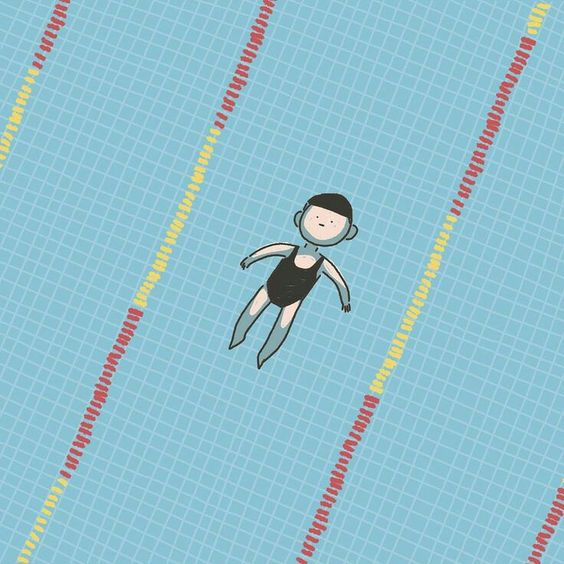

¡Hola mundo!
con mascotas UnUr
Me gusta la sandia porque me da la alegría de mis mascotas.
Los gatitos
Los gatos, criaturas enigmáticas y cautivadoras, son verdaderas maravillas de la naturaleza. Su gracia felina y su independencia los convierten en compañeros fascinantes. Sus ojos, ventanas a un alma misteriosa, brillan con una inteligencia astuta y una curiosidad innata. Dotados de un oído excepcional y un olfato agudo, exploran el mundo con una percepción sensorial que escapa a nuestra comprensión humana. Sus ágiles cuerpos, diseñados para la caza y la exploración, se mueven con una elegancia y precisión impresionantes. Pero más allá de su destreza física, los gatos poseen una capacidad única para brindar confort y compañía. Su ronroneo, una melodía relajante, tiene el poder de aliviar el estrés y calmar el alma. Su presencia, a veces distante y otras afectuosa, nos recuerda la importancia de valorar los momentos de conexión genuina. En cada gato reside un universo de maravillas por descubrir, un enigma que nos invita a observar, aprender y amar sin condiciones.

Los perritos
Los perritos son compañeros adorables y leales que aportan numerosos beneficios a nuestras vidas. Su presencia en el hogar puede mejorar significativamente la salud mental de sus dueños. Estudios han demostrado que interactuar con un perro puede reducir los niveles de estrés, ansiedad y depresión. La simple acción de acariciar a un perro libera oxitocina, una hormona que promueve la sensación de bienestar y felicidad. Además, los perritos fomentan un estilo de vida más activo, ya que requieren paseos diarios y tiempo de juego, lo que ayuda a sus dueños a mantenerse en forma y saludables. La responsabilidad de cuidar a un perro también puede proporcionar estructura y propósito a la rutina diaria de una persona. Los perros son excelentes para la socialización. Pasearlos en el parque o en el vecindario puede facilitar encuentros y conversaciones con otras personas, lo que ayuda a combatir la soledad y a formar nuevas amistades. Además, los perritos pueden ser de gran ayuda para personas con discapacidades, actuando como perros de servicio y proporcionando asistencia crucial en diversas tareas diarias. En resumen, los perritos no solo son adorables y cariñosos, sino que también ofrecen beneficios físicos, emocionales y sociales que mejoran la calidad de vida de sus dueños.

No puedo decidirme entre perros y gatos, porque ambos tienen su toque.